A 4-layer carrier board for the LattePanda Mu compute module. It adds Gigabit Ethernet, USB 3.0 and 2.0, HDMI, M.2 M-key and E-key slots, a CPU fan header, GPIO headers and two power inputs (12 V DC and 15 V USB-C PD). Designed in KiCad with controlled impedance and short, length-matched high-speed pairs.
The LattePanda Mu is a small x86 compute module, so it needs a carrier board to become a real computer. This project is my own carrier board for it. I made the schematic from the official LattePanda Mu reference design and removed some parts I did not need, mainly the PCIe x4 slot. What is left is a clean board with power input, Ethernet, USB, HDMI, M.2 storage and wireless slots, a fan header and GPIO pins. The board is a 4-layer PCB made for high-speed signals. I used controlled impedance traces, short return paths, short differential pairs and skew tuning to keep signals clean and EMI low.
I made the schematic from the LattePanda Mu reference design and the official sources. I kept what I needed and left out some parts, especially PCIe. The design is split into sheets, one for each block, so it is easy to read and check. The top sheet below shows the Mu module and how it connects to all the other blocks.
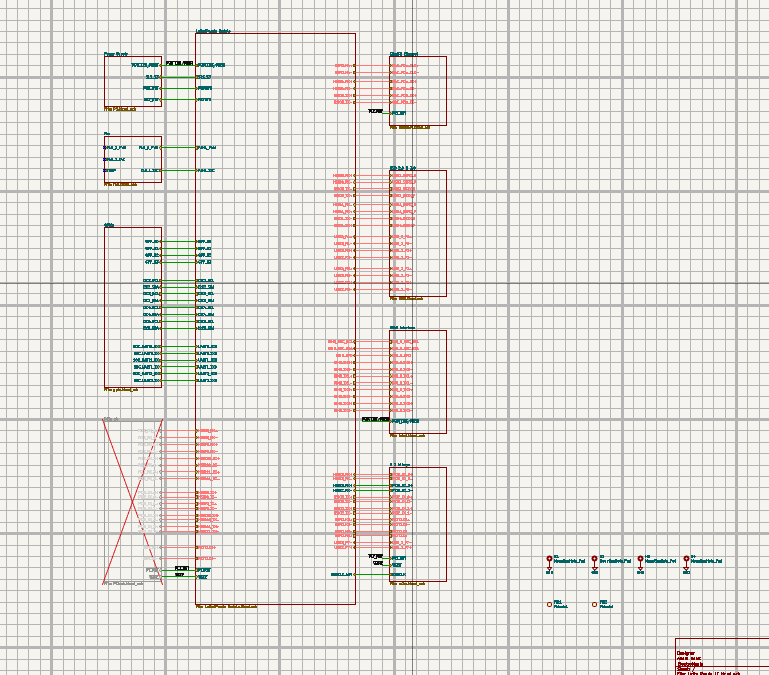
The board takes power from a 12 V DC jack (rated for 6–10 A) or from a USB-C PD input, where a CH224K chip asks the charger for 15 V. Two buck converters (23 V, 3 A, 500 kHz) then make the lower rails for the module and the peripherals. A small coin cell keeps the RTC running when power is off. The PCIe power section is crossed out because I did not populate it.
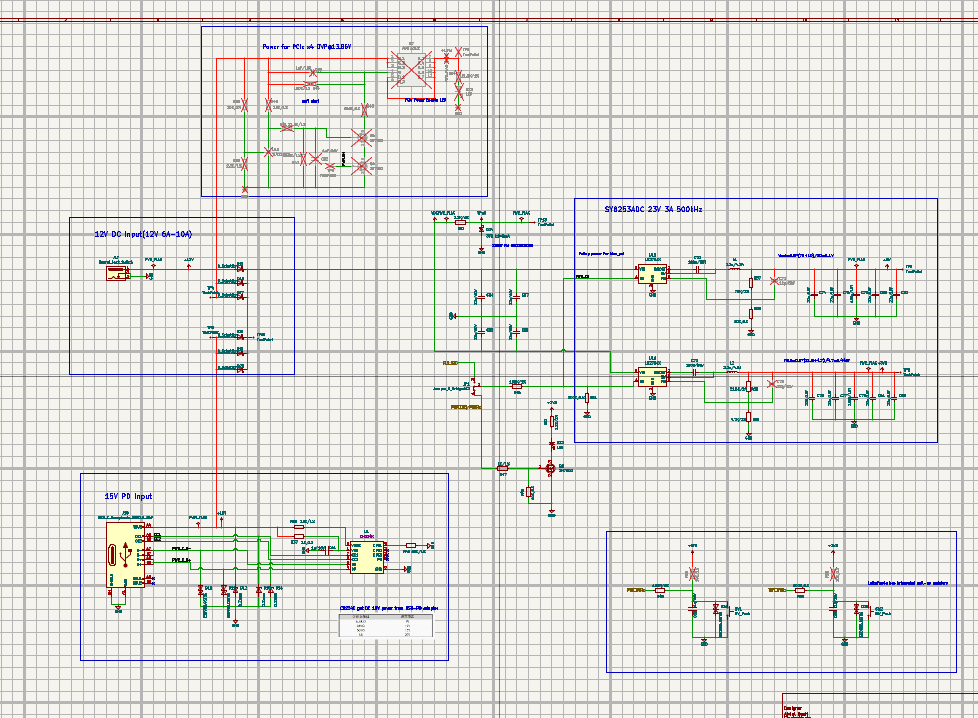
A 4-pin fan header gives PWM speed control and tacho feedback. The tacho line uses a pull-up and a series resistor to keep the signal safe for the 3.3 V input. A small capacitor and resistor filter the signal, and a diode clamps the spikes that come from the fan motor. The LattePanda Mu already has internal pull-ups, so the external ones are left out. Two spare footprints are kept for a 12 V fan.
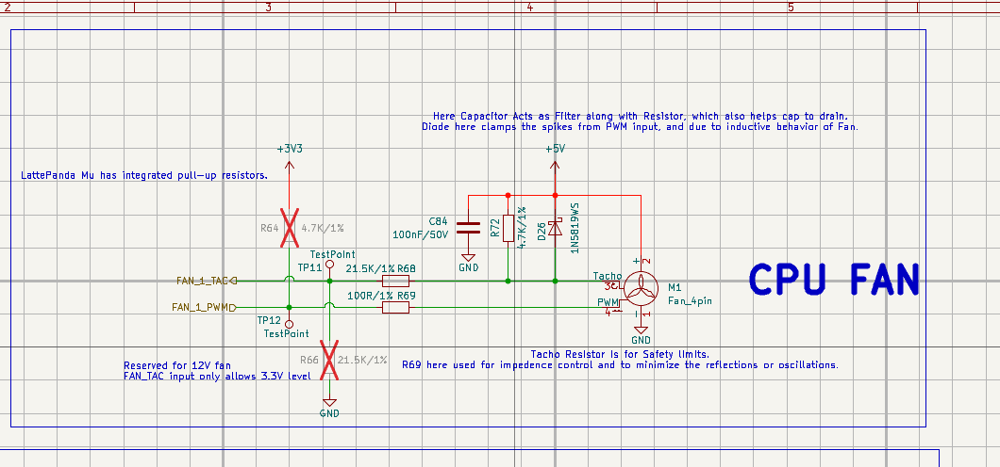
These are simple pin headers for I²C, UART and general GPIO, with 3.3 V and GND pins next to them. Each group has a ULC0524P low-capacitance ESD array to protect the module pins from static and wrong connections.
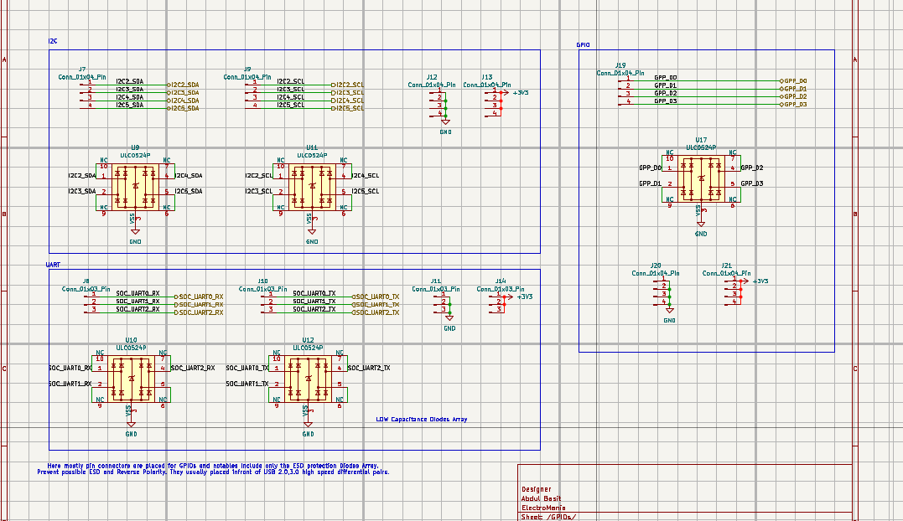
The PCIe x4 slot is drawn in the schematic but crossed out, because I decided not to populate it in this version. I kept it so I can add it later if needed. The 220 nF AC coupling capacitors and the power filtering are already planned on the sheet.
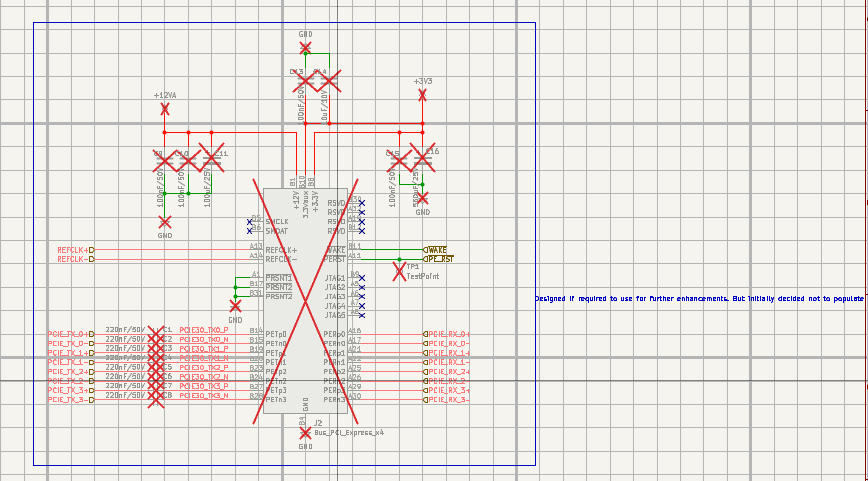
A PCIe-to-Gigabit Ethernet controller connects to the module over a PCIe lane. It uses a 25 MHz crystal and sends the four MDI pairs to an RJ45 jack with built-in magnetics and link LEDs. The extra ESD arrays on the MDI lines are not populated, because the added capacitance is not worth it for the small ESD risk.
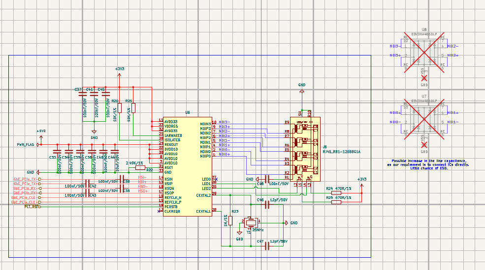
Two stacked USB 3.0 ports and one stacked USB 2.0 connector. Each port has a 1 A fuse and a 22 µF capacitor on VBUS. The SuperSpeed lines have AC coupling capacitors and low-capacitance ESD arrays, and the USB 2.0 data lines have their own ESD protection.
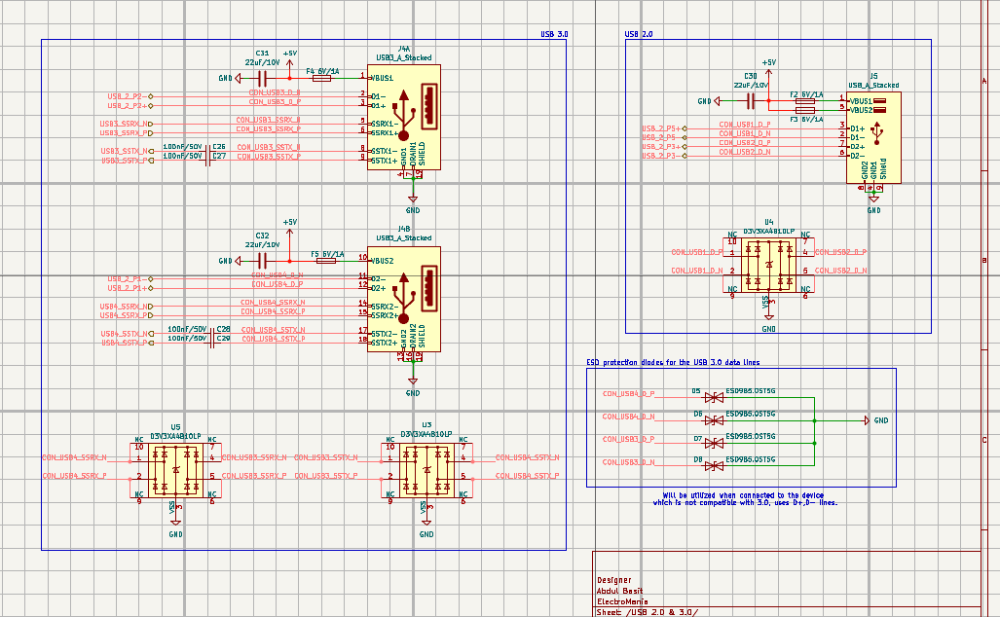
The module's display lines go to the HDMI connector through AC coupling capacitors and termination resistors. MOSFET level shifters connect the 3.3 V host to the 5 V DDC (I²C) and HPD lines. ESD arrays protect the TMDS lines, a diode blocks reverse current on the 5 V pin, and an LED shows when an HDMI display is active.
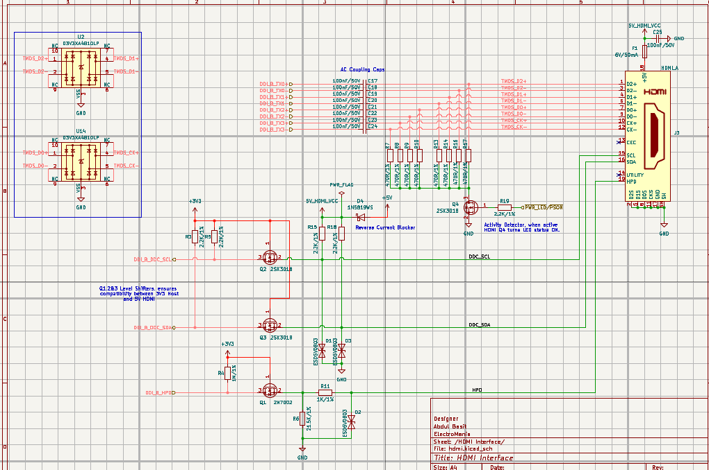
The M-key socket is for high-speed storage (NVMe or SATA SSD). The E-key socket is for communication cards such as Wi-Fi and Bluetooth, and it also gives USB, I²C and UART. Both sockets have decoupling capacitors for high-frequency noise and AC coupling capacitors on the high-speed lines.
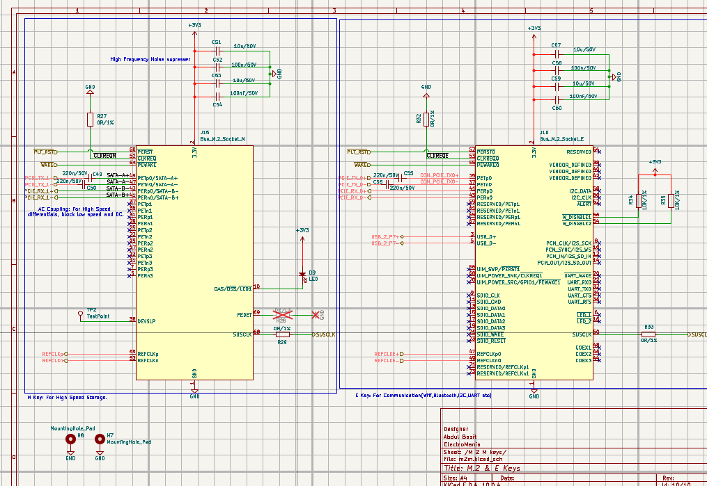
I used the NextPCB stack-up calculator to find the right trace widths for this board. The stack-up is 4 layers: Signal, GND, PWR+GND, Signal. With this stack-up I got the widths for three impedance targets: 90 Ω differential, 100 Ω differential and 50 Ω single-ended. Every high-speed line was routed with these widths so the signal sees a constant impedance from the module to the connector.
The module sits in the middle with a heatsink and fan, and the connectors are placed around the edges. All high-speed differential pairs are shorter than 75 mm, which is very good for this kind of board. I did skew tuning inside each pair so both traces arrive at the same time. I kept return paths short and used the solid GND layer under the signals to reduce EMI. I also collected the footprints from different trusted sources and checked them carefully against the datasheets.
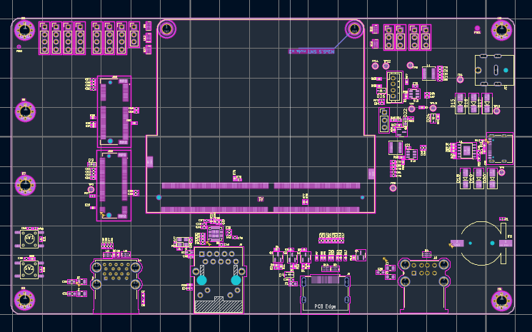
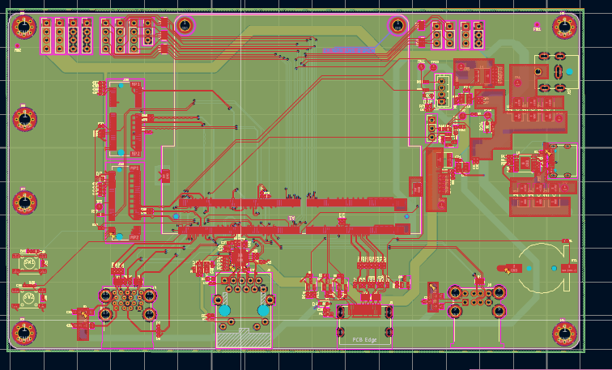
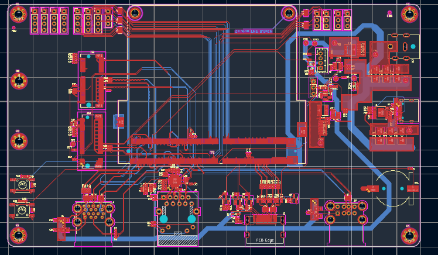
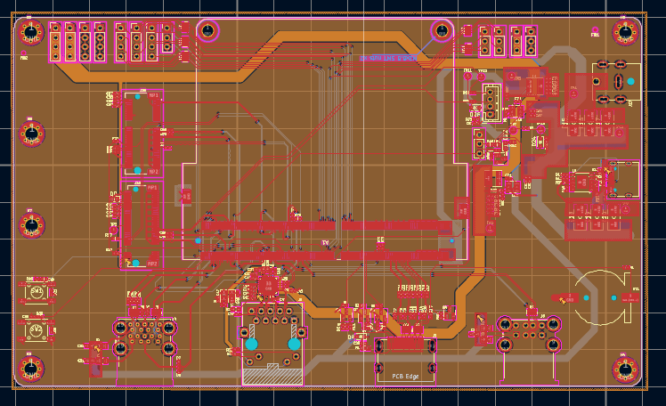
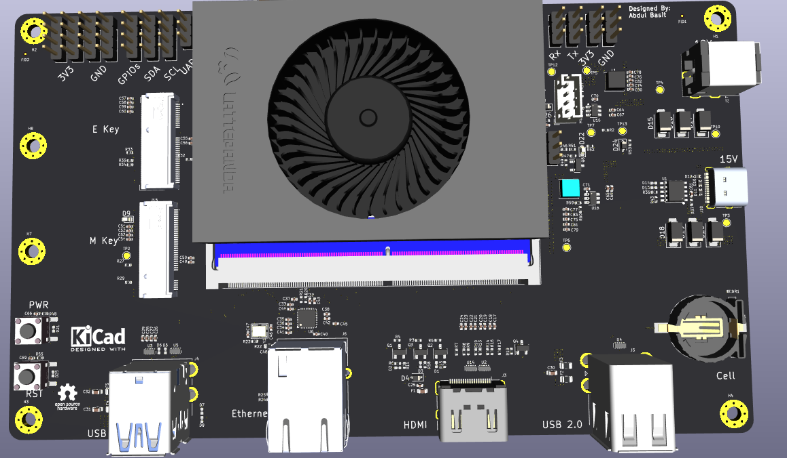
This project taught me how to turn a reference design into my own board. I learned how to choose what to keep and what to remove, and how to plan a stack-up for controlled impedance. I also got practice routing USB 3.0, HDMI, Ethernet and M.2 lines on a 4-layer board while keeping them short, matched and clean. It is a good base for a full single-board computer, and the PCIe slot can be added in a next version.